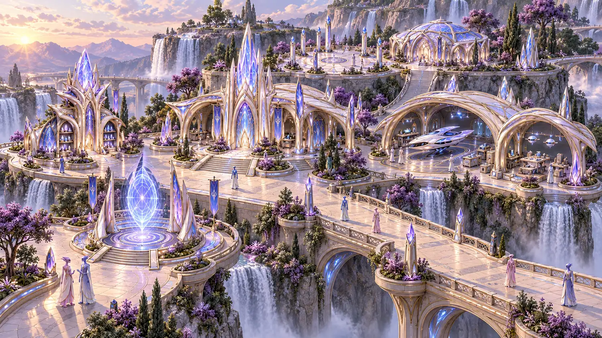
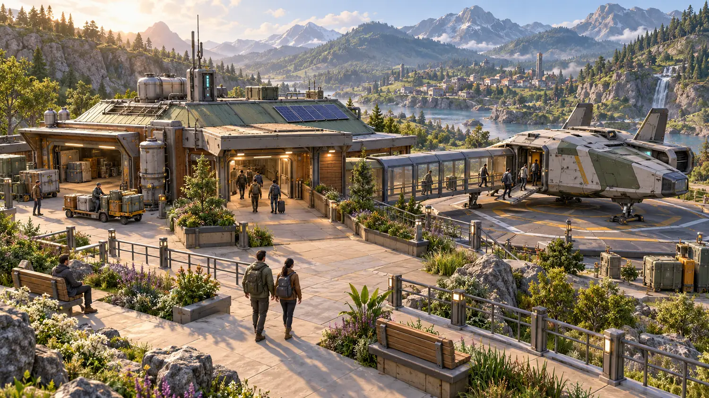
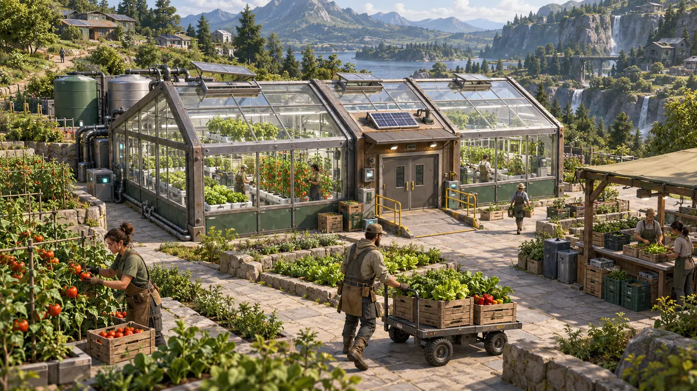

Your hands. Your world.
Powrush
Take everything and the glow fades. Share it, and the climate comes back. Your call.
From the studio behind Powrush
-
 The company · acitygames.com
Autonomicity Games Inc.
The studio building Powrush. And yes, A·G·I is a wink at artificial general intelligence.
(opens in a new tab)
The company · acitygames.com
Autonomicity Games Inc.
The studio building Powrush. And yes, A·G·I is a wink at artificial general intelligence.
(opens in a new tab)
-
 The system · rathor.ai
Rathor.ai
Ra-Thor, the system behind Rathor.ai. Building Powrush led to it, and now it helps build Powrush-MMO.
(opens in a new tab)
The system · rathor.ai
Rathor.ai
Ra-Thor, the system behind Rathor.ai. Building Powrush led to it, and now it helps build Powrush-MMO.
(opens in a new tab)
Here’s the deal
Step into the yard
Powrush is a game from Autonomicity Games Inc. (opens in a new tab) You walk a living climate. You harvest with mercy. You learn how a resource-based economy works by playing it, not by reading about it. Take too much and the world shows it. Share well and it heals. This isn’t a grind for a paycheck: the reward is a world that comes back to life.
The yard is the whole universe, shrunk to the size of a well. Right now it’s you and your machine. The current build is offline and single-player, and it’s in active development. Online play isn’t available yet. No Steam page, no release date, no fake countdown. It isn’t a public launch candidate.
Powrush has been in the works since 2016 at Autonomicity Games Inc., according to the studio’s Powrush page (opens in a new tab). The Powrush-MMO licence (opens in a new tab) reads “Copyright (c) 2016–2026”. Want to look under the hood? The code is public at Powrush-MMO (opens in a new tab).
Pick a door
-
 World
Five peoples. Four places.
World
Five peoples. Four places.
Meet the five peoples and the stone, then see where each one lands: Sanctuary, Heartwood, Threshold, or Depths.
-
 Systems
Your first hour
Systems
Your first hour
Walk. Harvest. Tend. Allocate. Offline, on your own machine.
-

Play Coming laterPlay on this site is coming later. Online play isn’t available yet.
The world, painted
These paintings show the world as it’s imagined. They aren’t gameplay, and they aren’t screenshots of the current offline build. In the build itself, the look is gritty low-poly shapes and rich, detailed light: muted earth, plus one bold accent colour for each place.
-

Painted art. Cable car above turquoise lakes. -
Painted art. A crystal spire above the terraces. -

Painted art. Terraced greenhouses. -

Painted art. A lakeside dock. -

Painted art. A village market square. -

Painted art. A bridge over a waterfall gorge.